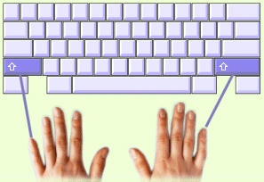

|
T‰h‰n asti olemme kirjoittaneet vain pienill‰ kirjaimilla. T‰ss‰ ja seuraavassa oppitunnissa opit kirjoittamaan isoja kirjaimia k‰ytt‰m‰ll‰ vaihton‰pp‰imi‰. Isot kirjaimet kirjoitetaan k‰ytt‰en molempia k‰si‰, toista painamaan vaihton‰pp‰int‰ ja toista kirjoittamaan haluamasi kirjain. Vaihton‰pp‰int‰ pidet‰‰n alhaalla samaan aikaan, kun kirjain kirjoitetaan. Vaihton‰pp‰imi‰ painetaan aina pikkusormilla. |
 |